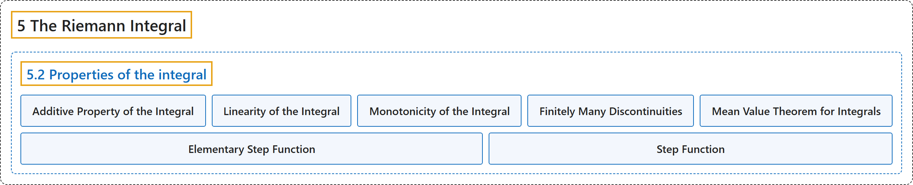

5.2 Properties of the integral
Classification

Glossary
| Term | Definition | 中文翻译 | Source |
|---|---|---|---|
| 5.2 Properties of the integral 积分的性质 |
(No definition) | （无定义） | Lebl, 2026, section 5.2 |
| Additive Property of the Integral 积分的可加性 |
"Adding a bunch of things in two parts and then adding those two parts should be the same as adding everything all at once. The corresponding property for integrals is called the additive property of the integral." | 把一堆东西分两部分相加、再把两部分相加，应当与一次全部相加相同。积分的相应性质称为积分的可加性。 | Lebl, 2026, section 5.2 |
| Linearity of the Integral 积分的线性 |
"Let \(f\) and \(g\) be in \(\mathcal{R}\bigl([a,b]\bigr)\) and \(\alpha \in \mathbb{R}\). \(\alpha f\) is in \(\mathcal{R}\bigl([a,b]\bigr)\) and \(\int_a^b \alpha f(x) \,dx = \alpha \int_a^b f(x) \,dx\). \(f+g\) is in \(\mathcal{R}\bigl([a,b]\bigr)\) and \(\int_a^b \bigl( f(x)+g(x) \bigr) \,dx = \int_a^b f(x) \,dx + \int_a^b g(x) \,dx\)." | 设 \(f\) 与 \(g\) 属于 \(\mathcal{R}\bigl([a,b]\bigr)\)，\(\alpha \in \mathbb{R}\)。\(\alpha f\) 属于 \(\mathcal{R}\bigl([a,b]\bigr)\) 且 \(\int_a^b \alpha f(x) \,dx = \alpha \int_a^b f(x) \,dx\)；\(f+g\) 属于 \(\mathcal{R}\bigl([a,b]\bigr)\) 且 \(\int_a^b \bigl( f(x)+g(x) \bigr) \,dx = \int_a^b f(x) \,dx + \int_a^b g(x) \,dx\)。 | Lebl, 2026, Proposition 5.2.4 |
| Monotonicity of the Integral 积分的单调性 |
"Let \(f \colon [a,b] \to \mathbb{R}\) and \(g \colon [a,b] \to \mathbb{R}\) be bounded, and \(f(x) \leq g(x)\) for all \(x \in [a,b]\). Then \(\underline{\int_a^b} f \leq \underline{\int_a^b} g\) and \(\overline{\int_a^b} f \leq \overline{\int_a^b} g\). Moreover, if \(f\) and \(g\) are in \(\mathcal{R}\bigl([a,b]\bigr)\), then \(\int_a^b f \leq \int_a^b g\)." | 设 \(f \colon [a,b] \to \mathbb{R}\) 与 \(g \colon [a,b] \to \mathbb{R}\) 有界，且对所有 \(x \in [a,b]\) 有 \(f(x) \leq g(x)\)，则 \(\underline{\int_a^b} f \leq \underline{\int_a^b} g\) 且 \(\overline{\int_a^b} f \leq \overline{\int_a^b} g\)。此外，若 \(f\) 与 \(g\) 属于 \(\mathcal{R}\bigl([a,b]\bigr)\)，则 \(\int_a^b f \leq \int_a^b g\)。 | Lebl, 2026, Proposition 5.2.6 |
| Finitely Many Discontinuities 有限个间断点 |
"We say a function \(f \colon [a,b] \to \mathbb{R}\) has finitely many discontinuities if there exists a finite set \(S = \{ x_1, x_2, \ldots, x_n \} \subset [a,b]\), and \(f\) is continuous at all points of \([a,b] \setminus S\)." | 若存在有限集 \(S = \{ x_1, x_2, \ldots, x_n \} \subset [a,b]\)，使 \(f\) 在 \([a,b] \setminus S\) 的所有点处连续，则称函数 \(f \colon [a,b] \to \mathbb{R}\) 有有限个间断点。 | Lebl, 2026, section 5.2 |
| Mean Value Theorem for Integrals 积分中值定理 |
"Prove the mean value theorem for integrals: If \(f \colon [a,b] \to \mathbb{R}\) is continuous, then there exists a \(c \in [a,b]\) such that \(\int_a^b f = f(c)(b-a)\)." | 证明积分中值定理：若 \(f \colon [a,b] \to \mathbb{R}\) 连续，则存在 \(c \in [a,b]\) 使得 \(\int_a^b f = f(c)(b-a)\)。 | Lebl, 2026, Exercise 5.2.4 |
| Elementary Step Function 初等阶梯函数 |
"If \(I \subset \mathbb{R}\) is a bounded interval, then the function \(\varphi_I(x) := \begin{cases} 1 & \text{if } x \in I, \\ 0 & \text{otherwise,} \end{cases}\) is called an elementary step function." | 若 \(I \subset \mathbb{R}\) 是有界区间，则函数 \(\varphi_I(x) := \begin{cases} 1 & \text{if } x \in I, \\ 0 & \text{otherwise,} \end{cases}\) 称为初等阶梯函数。 | Lebl, 2026, Exercises 5.2 |
| Step Function 阶梯函数 |
"A function \(f\) is called a step function if it can be written as \(f(x) = \sum_{k=1}^n \alpha_k \varphi_{I_k} (x)\) for some real numbers \(\alpha_1,\alpha_2, \ldots, \alpha_n\) and some bounded intervals \(I_1,I_2,\ldots,I_n\)." | 若函数 \(f\) 能写成 \(f(x) = \sum_{k=1}^n \alpha_k \varphi_{I_k} (x)\)，其中 \(\alpha_1,\alpha_2, \ldots, \alpha_n\) 是实数，\(I_1,I_2,\ldots,I_n\) 是有界区间，则称 \(f\) 为阶梯函数。 | Lebl, 2026, Exercises 5.2 |
References
Lebl, J. (2026). Basic analysis I & II: Introduction to real analysis (May 22, 2026 edition). Retrieved October 29, 2026, from https://www.jirka.org/ra/html/